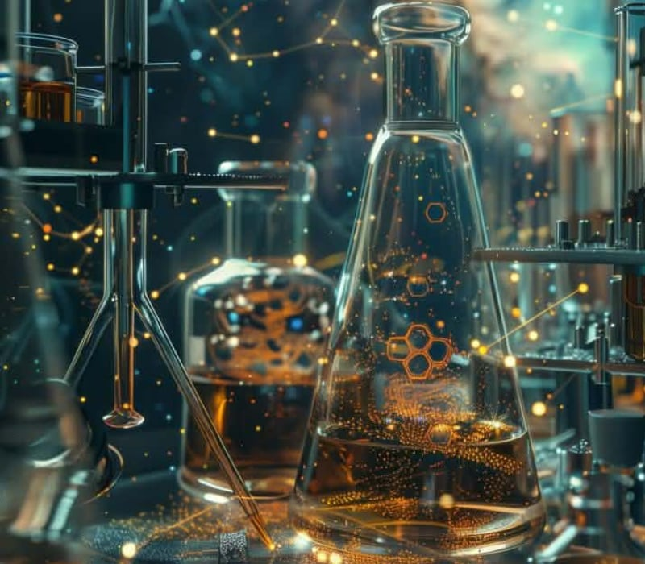

Synthetic biology is one of the most exciting and talked-about areas of science today. It combines biology and engineering to design and build new biological systems, including organisms that do not exist in nature. With this technology, scientists can create bacteria that produce fuel, yeast that makes medicine, or crops that can resist diseases and drought. The possibilities are endless, and many believe it could help solve big global problems like climate change, food shortages, and health issues.
But with great power also comes great responsibility. The idea of creating life raises serious ethical questions. What if a synthetic organism escapes into the wild and harms the environment? Who should have control over these man-made forms of life? There are also concerns that synthetic biology could be used in dangerous ways, such as making biological weapons.
Because of these risks, experts say that scientists, governments, and the public need to work together to make sure this technology is used safely and fairly. This means setting clear rules, being open about research, and discussing what limits should exist. As synthetic biology continues to grow, we must find a way to balance innovation with responsibility so that it helps people and protects the planet. Synthetic Biology and Ethics: Power, Progress, and Precaution
Synthetic biology is one of the most exciting and talked-about areas of science today. It combines biology and engineering to design and build new biological systems, including organisms that do not exist in nature. With this technology, scientists can create bacteria that produce fuel, yeast that makes medicine, or crops that can resist diseases and drought. The possibilities are endless, and many believe it could help solve big global problems like climate change, food shortages, and health issues.